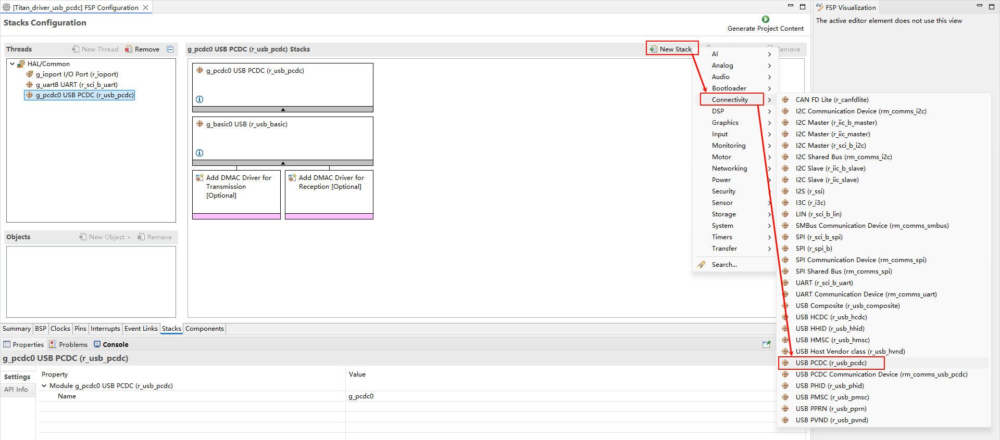
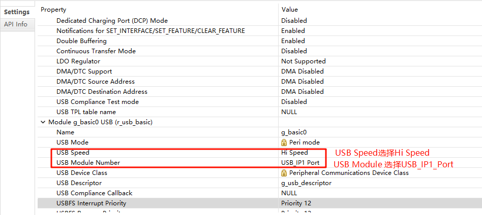
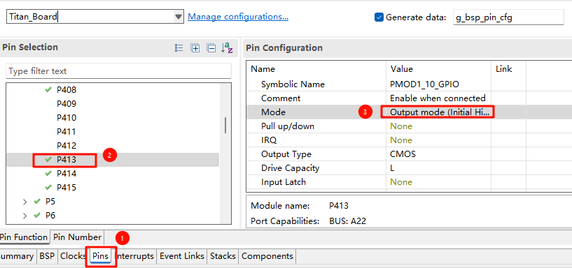
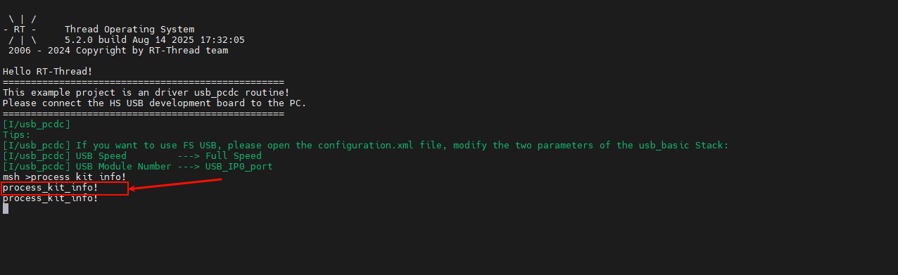

USB PCDC Driver Example Guide
English | Chinese
Introduction
This example demonstrates how to use the RA8 Series MCU USB PCDC module (r_usb_pcdc) on the Titan Board to enumerate the device as a USB virtual serial port (CDC), allowing serial communication with the board on a PC as a “COM port/ttyACM”.
USB PCDC Instructions
1. Overview
USB PCDC (USB Peripheral Communications Device Class) is a specific implementation of the CDC (Communications Device Class) defined in the USB protocol.
It primarily allows embedded devices to appear as a virtual serial port (VCOM) over USB, enabling the host (PC or embedded host) to interact with the USB device just like a traditional UART serial port.
Common application scenarios:
MCU as a USB device, recognized by the PC as a virtual serial port (COMx).
Embedded devices communicating with a host computer for data transfer or debugging.
Replacing physical RS-232/RS-485 interfaces to reduce hardware cost.
2. PCDC Protocol Features
CDC Class Protocol
USB-defined communication device class, uses standard class drivers (no extra driver installation needed; automatically recognized on Windows/Linux/macOS).
Data Transfer Methods
Control Endpoint (Endpoint 0): Used for device enumeration and descriptor transfer.
Interrupt Endpoint: Used for status and control signals (e.g., DTR, RTS).
Bulk Endpoint: For high-efficiency, reliable serial data transfer.
Virtual Serial Port Features
Appears as a standard serial port (COM port or ttyUSB) on the host.
Supports UART configurations such as baud rate, data bits, parity, and stop bits.
3. Typical Application Architecture
USB Device (MCU side): Implements the PCDC protocol stack, connecting USB data to the MCU’s internal UART/application layer.
USB Host (PC/embedded system): Maps a virtual serial port through the OS-provided CDC driver.
Application Layer: Host software (PuTTY, Tera Term, serial monitor tools) can communicate directly.
4. Advantages
No additional driver needed: Most OSs include built-in CDC drivers.
Replaces traditional serial ports: Enables debugging/communication even without a physical UART.
Higher data rates: Full-Speed (12 Mbps) or High-Speed (480 Mbps) USB exceeds typical UART bandwidth.
High compatibility: Works with various host applications (LabVIEW, Python pySerial, C# serial libraries).
RA8 Series USB PCDC Module (r_usb_pcdc) Overview
The RA8 Series MCU integrates a USB PCDC (Peripheral CDC) module, designed to enumerate the MCU as a USB virtual serial port (CDC device), enabling bidirectional data communication with a PC or other USB hosts. It works together with the RA8 basic USB module (r_usb_basic), and the r_usb_pcdc class driver provides full CDC functionality.
1. Module Functionality
Device Mode Support: MCU acts as a USB device connected to a host (Full-Speed / High-Speed, depending on MCU specification).
Virtual Serial Port (CDC) Features:
Handles class requests:
SET_LINE_CODING,GET_LINE_CODING,SET_CONTROL_LINE_STATE,SEND_BREAK.Supports standard Bulk IN/OUT endpoints and an Interrupt IN endpoint.
Generates serial port status notifications (e.g., DTR/RTS, line state).
Data Transfer Management: Supports high-efficiency transfer with DMA/DTC or FIFO buffers.
Event Callback Mechanism: For connection, disconnection, configuration completion, data transfer completion, class request handling, and error events.
Hot-plug and Low Power: Supports VBUS detection, suspend/resume, and remote wakeup.
Application Layer Interface: Provides API for read/write buffers, send-complete notifications, and event callbacks.
2. Supported Features
Standard USB Enumeration: Supports Device, Configuration, and Interface Descriptors.
Endpoint Management: Configures Bulk IN/OUT and Interrupt IN endpoints.
Class Request Handling: Parses line coding and control line state according to CDC protocol.
Reliable Transfers: Supports CRC, NAK, STALL, and timeout handling.
Multiple Device & Composite Device Support: Can dynamically manage multiple CDC devices via hubs.
DMA Collaboration: Optimizes data throughput and reduces CPU load.
3. Module Architecture
[ Application Layer Task/Thread ]
↑ Callback/Event notifications (connect, configure, transfer complete)
[ r_usb_pcdc Class Driver ]
↕ Class request parsing, data transfer management, endpoint configuration
[ r_usb_basic Basic Driver ]
↕ USB device enumeration, endpoint control, SOF interrupt, DMA support
[ USB Device Controller/PHY ]
↕ USB D+/D- signals (FS) or ULPI/HS PHY (HS)
[ USB Cable ] <—> Host (PC)
Key Submodules:
Class Request Handler: Parses CDC class requests and callbacks the application.
Endpoint Control and Buffers: Manages Bulk/Interrupt endpoints and supports DMA/FIFO.
Event Management: Handles connection/disconnection, configuration, suspend/resume, transfer complete, error events.
Power and Clock Control: USB PHY, VBUS detection, suspend/wake management.
4. Workflow
USB Initialization: Initialize USB controller, PHY, and class driver.
Device Connection Detection: Detect VBUS/ID signals to trigger enumeration.
Enumeration and Configuration: Upload descriptors and configure interface/endpoints.
Endpoint Data Transfer: Application exchanges data with host via Bulk IN/OUT endpoints.
Class Request Handling: Process CDC control requests from host.
Event Callback Notification: Notify application of connection, configuration, and transfer completion.
Disconnection Handling: Stop endpoint transfers, release buffers, and handle device removal events.
FSP Configuration Configuration
Create a
r_usb_pcdc stack：

Configure
r_usb_basic：

Configure USB FS pin：

Configure USB HS pin：

PS: Note that when switching to HS mode, the P413 pin needs to be pulled high, as shown in the figure below:

RT-Thread Settings Configuration
Enable USB PCDC。

Compilation & Download
RT-Thread Studio: Download the Titan Board resource package from the RT-Thread Studio package manager, then create a new project and compile.
After compiling, connect the USB-DBG interface of the development board to the PC and download the firmware to the development board.
Running Effect
Use USB cable to connect the USB-DEV interface of Titan Board with the computer, open the serial port terminal with the serial port assistant, input 1 into the serial port terminal, and see the output in the debugging terminal of the development board.

Enter 2 into the USB-PCDC serial terminal, and you will see the following output in the USB-PCDC serial terminal: